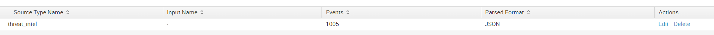
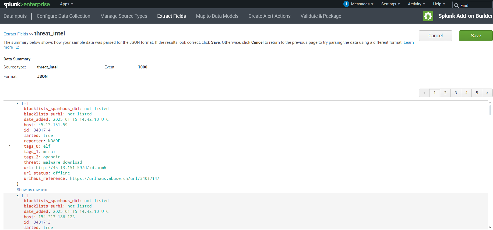

Abstract
The Security Threat Intelligence Add-On for Splunk enhances Splunk's threat detection capabilities by integrating versatile and efficient threat intelligence tools...
Introduction
In today’s cyber threat landscape, organizations need scalable, real-time threat detection tools...
Key Features
- Integration with open-source threat feeds (e.g., AlienVault OTX, Abuse.ch).
- Customizable dashboards and alerts for tailored threat analysis.
- Data normalization using Splunk's Common Information Model (CIM).
- Enhanced detection logic correlating internal logs with external threat indicators.
Methodology
The project follows the Waterfall methodology...
Images of this add-on in use
Below, you will find various images related to this project:
 Conclusion
This project highlights the potential for improving threat detection and response using a specialized Splunk add-on...